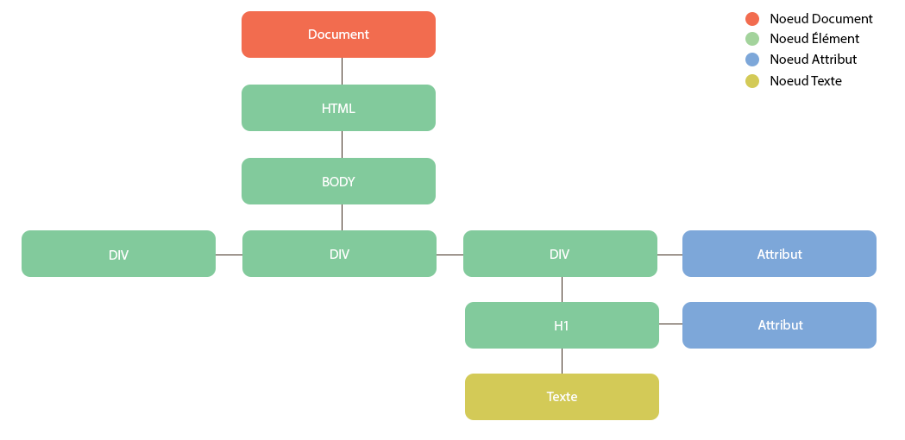
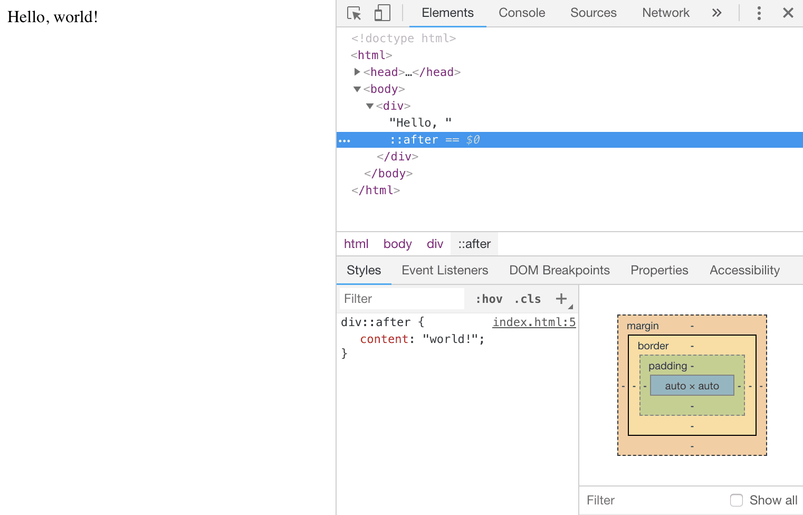

Le cheminement d'un navigateur partant d'un document source HTML pour finalement afficher une
page
stylée et interactive s'appelle le chemin critique du rendu (critical rendering path). Ce
processus
être regroupées en deux grandes étapes. La première consiste en l'analyse du document par le
navigateur pour déterminer ce qui sera finalement rendu sur la page, et la seconde est le rendu
par
le navigateur.
- le CSSOM, une représentation des styles associés aux éléments
- le DOM, la représentation des éléments
La structure d'objet du DOM est représentée par ce qu'on appelle une "arborescence de nœuds"
(node
tree). On l'appelle ainsi parce qu'il peut être considéré comme un arbre qui se ramifie en
plusieurs
branches enfants, chacune pouvant avoir des feuilles. Le premier parent est l'élément racine
<html>, les "branches" enfants sont les éléments imbriqués et les "feuilles" sont le contenu
des
éléments.

Bien que créé à partir du document source HTML, le DOM n'en est pas toujours l'exact reflet. Il
peut en différer dans deux cas :
- Pendant le processus de création du DOM, le navigateur peut être amené à corriger des
informations invalides.
- Lorsque le DOM est modifié par le javascript, il sera mis à jour, mais bien entendu notre
document source HTML restera inchangé.
Le DOM n'est pas non plus ce que vous voyez dans le navigateur, une instruction comme display:
none peut masquer des éléments du DOM
Le DOM n'est pas ce que vous voyez dans DevTools. Cette différence ne tient pas à grand chose car
l'inspecteur d'éléments DevTools offre la meilleure approximation du DOM disponible dans le
navigateur. Toutefois DevTools inclut des informations qui ne sont pas dans le DOM.
Le meilleur exemple en est les pseudo-éléments CSS créées via les sélecteurs ::before et
::after. Ils font partie du CSSOM et de l'arbre de rendu mais techniquement ils n'appartiennent
pas au DOM puisque celui-ci est construit à partir du seul document source HTML, qui ne comprend
pas les styles appliqués aux éléments.
Pour afficher la console dans chrome saisir ctrl + maj +
i
